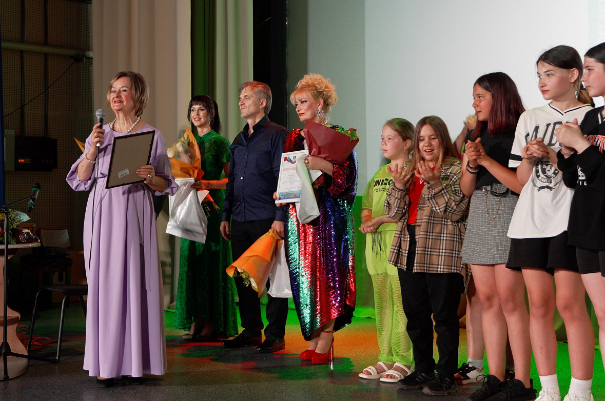
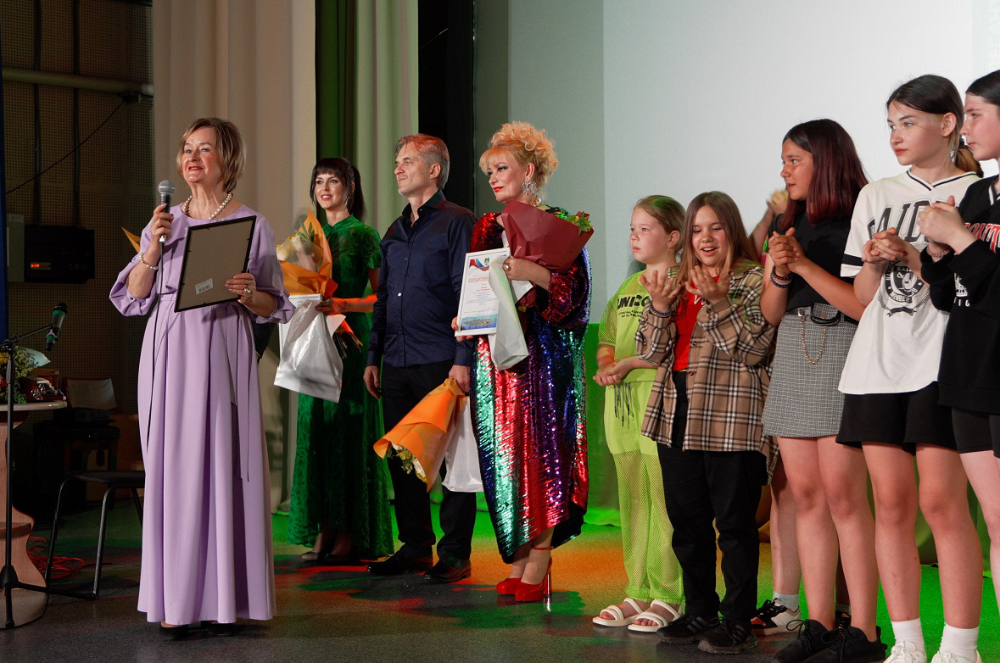
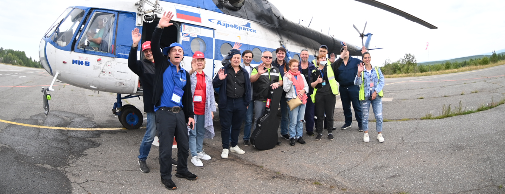
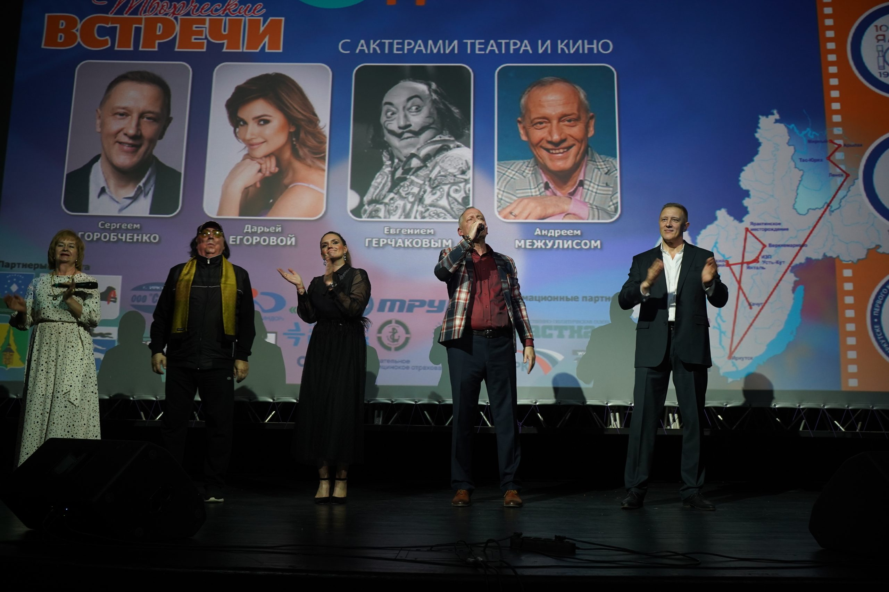

О десанте
"Северный десант"– единственный в России уникальный проект, погружающий зрителей в мир искусства
на краю русской земли. "Северный десант" - объединение артистов, музыкантов, творческих
людей – всех тех, кому не безразличны простые люди, их душа, мысли, надежды.
Это - братство единых духом и мировоззрением творцов, готовых преодолевать тысячи километров бездорожья,
чтобы поделиться теплом и талантом.
 

"Северный десант" - не только звёздные встречи, спектакли, концерты, мастер-классы, фестивальное кино,
сюрпризы, подарки.
Это - долгосрочная программа развития социально-культурной сферы Прибайкалья и Якутии. Всё для зрителей
на нём бесплатно.


"Северный десант" - это чистое, высокое искусство, без примеси и фальши. Это - праздник, который ждут
весь год и помнят всю жизнь. Это соединительная платформа для мультикультурного общения
между кинематографистами страны, их знакомство с сибирским краем. Это праздник творчества! Диалог сердец!


Этот культурный проект хорошо знаком жителям глубинки Иркутской области и Республика Саха (Якутия).
С 2014-го года, как во времена знаменитого фестиваля «Огни магистрали», приезжают сюда известные актеры
театра и кино с творческими встречами, спектаклями, мастер-классами, показами хороших фестивальных фильмов…
За девять лет порядка 30 заслуженных, народных, популярных и просто горячо любимых деятелей киноискусства,
среди них: Юрий Назаров, Светлана Тома, Ия Нинидзе, Эвклид Кюрдзидис, Марина Яковлева, Александр Носик,
Сергей Колесников, Оксана Сташенко, Олег Акулич, Ирина Лачина, Татьяна Абрамова, Игорь Ливанов,
Денис Матросов, Евгений Герчаков, Андрей Межулис, Сергей Горобченко, Ольга Хохлова, Олег Харитонов,
Алексей Барабаш и др., побывали в 27 отдаленных городах и поселках севера: Братске, Железногорске-Илимском,
Коршуновском, Янтале, Усть-Куте, Нии, Звездном, Верхнемаркове, Качуге, Ербогачёне, Киренске, Алексеевске,
Ленске, Тас-Юряхе, Мирном и др. Проведено более 250 мероприятий, которые посетили почти 75 тысяч человек.
Проект получил признание жителей и муниципалитетов данных территорий. Он проводится БЕСПЛАТНО для населения,
за счет спонсорских средств.
«СЕВЕРНЫЙ ДЕСАНТ» постоянно расширяет свои географию и список добрых дел. Он - уникален и является единственным в России. Его автор и руководитель – Татьяна ЖИНДАЕВА.
«СЕВЕРНЫЙ ДЕСАНТ» постоянно расширяет свои географию и список добрых дел. Он - уникален и является единственным в России. Его автор и руководитель – Татьяна ЖИНДАЕВА.

Татьяна Николаевна ЖИНДАЕВА, журналист, продюсер, автор нескольких телевизионных проектов
на областном и городском телеканалах, предприниматель почти с 30-летним стажем, член Союза журналистов России.
С отличием окончила Иркутский госуниверситет. Родом из Забайкалья, живет и работает в Иркутске.
Трудовой путь начала в коллективе Иркутского завода радиоприёмников. В комитете комсомола предприятия и как член райкома комсомола была одним из инициаторов движения МЖК (Молодежный Жилой Комплекс) на заводе и в Свердловском районе г. Иркутска. Вместе с десятками других молодых людей строила жилье для себя и города. В начале 90-х была приглашена на должность руководителя рекламной службы в газету «Комсомольская правда – Байкал». Под её руководством эта газета стала одним из лучших подразделений в АО ИД «Комсомольская правда».
В начале 2000-х открыла свое предприятие – ООО «ТМИН» (Творческая мастерская интересных находок), где работает директором по н. в. Занимается пиаром производителей товаров и услуг, выборными компаниями всех уровней, а также организацией и проведением корпоративных мероприятий и праздников, гастрольных туров. На местном, городском телеканале «АИСТ» (Альтернативная Иркутская Студия Телевидения) много лет выпускала авторскую программу по новым технологиям «Выше крыши».
С 2013 года при содействии Союза дорожников Иркутской области запустила на региональных телеканалах новый авторский проект «Прямое сообщение» - программу о дорогах и дорожниках, которая успешно действует по сей день. С телеэкрана рассказывает о нелегком, но очень важном для страны и нужном каждому россиянину труде дорожников; о том, насколько эта профессия востребована и современна.
С 2014 года занимается еще одним авторским проектом, уже в сфере культуры, - «Северный десант».
Трудовой путь начала в коллективе Иркутского завода радиоприёмников. В комитете комсомола предприятия и как член райкома комсомола была одним из инициаторов движения МЖК (Молодежный Жилой Комплекс) на заводе и в Свердловском районе г. Иркутска. Вместе с десятками других молодых людей строила жилье для себя и города. В начале 90-х была приглашена на должность руководителя рекламной службы в газету «Комсомольская правда – Байкал». Под её руководством эта газета стала одним из лучших подразделений в АО ИД «Комсомольская правда».
В начале 2000-х открыла свое предприятие – ООО «ТМИН» (Творческая мастерская интересных находок), где работает директором по н. в. Занимается пиаром производителей товаров и услуг, выборными компаниями всех уровней, а также организацией и проведением корпоративных мероприятий и праздников, гастрольных туров. На местном, городском телеканале «АИСТ» (Альтернативная Иркутская Студия Телевидения) много лет выпускала авторскую программу по новым технологиям «Выше крыши».
С 2013 года при содействии Союза дорожников Иркутской области запустила на региональных телеканалах новый авторский проект «Прямое сообщение» - программу о дорогах и дорожниках, которая успешно действует по сей день. С телеэкрана рассказывает о нелегком, но очень важном для страны и нужном каждому россиянину труде дорожников; о том, насколько эта профессия востребована и современна.
С 2014 года занимается еще одним авторским проектом, уже в сфере культуры, - «Северный десант».